1 · LAST LESSON · L112
Merge the sorted lists [1, 5] and [2, 4] into ascending order.
Four retrieval questions
Check your responses
One A3 mind map · 1.1–1.6
One A3 mind map · 2.1–2.5
CPU · FDE · Registers

| Register | Purpose |
|---|---|
| MAR | Address of memory location |
| MDR | Data / instruction transferred |
| PC | Address of next instruction |
| Accumulator | ALU result |
Mini-whiteboards
Which register holds the address of the next instruction?
What is the difference between the ALU and Control Unit?
Which register holds the address being accessed in memory?
Pen and A3 mind map
Use key terms, examples and connections.
RAM · ROM · Cache · Secondary storage
| Primary memory | Secondary storage |
|---|---|
| RAM — volatile | HDD — magnetic |
| ROM — non-volatile | SSD — flash |
| Cache — small and fast | Optical — laser |
Compare purpose, speed, capacity and durability.
Binary · Hex · Place value · Shifts
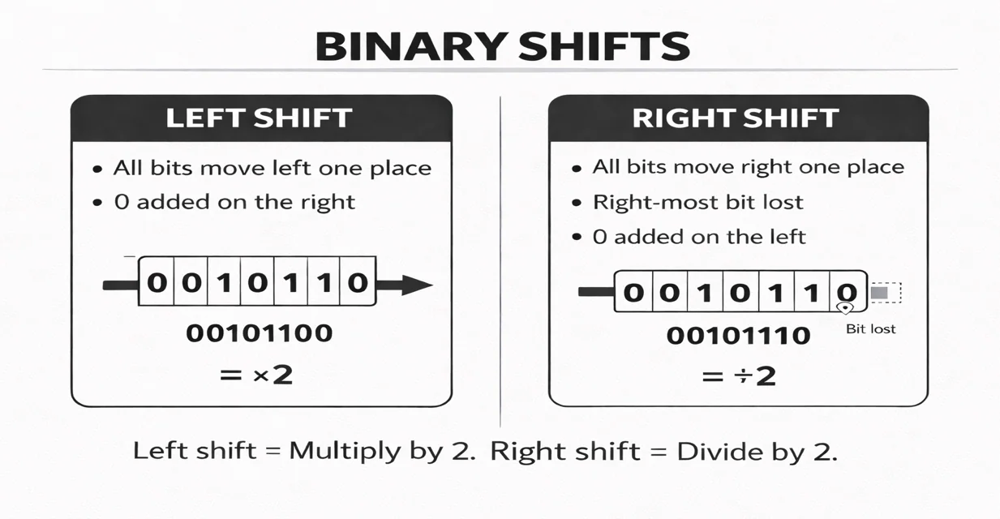
| Denary | 8-bit binary | Hex |
|---|---|---|
| 38 | 00100110 | 26 |
| 78 | 01001110 | 4E |
| 156 | 10011100 | 9C |
Mini-whiteboards
Convert denary 45 to 8-bit binary and hexadecimal.
Shift 01011000 logically right by two places.
A 20 × 10 pixel image has a colour depth of 8 bits. Calculate the uncompressed pixel-data size in bytes.
Pen and A3 mind map
Use key terms, examples and connections.
LAN · WAN · Star · Mesh · DNS
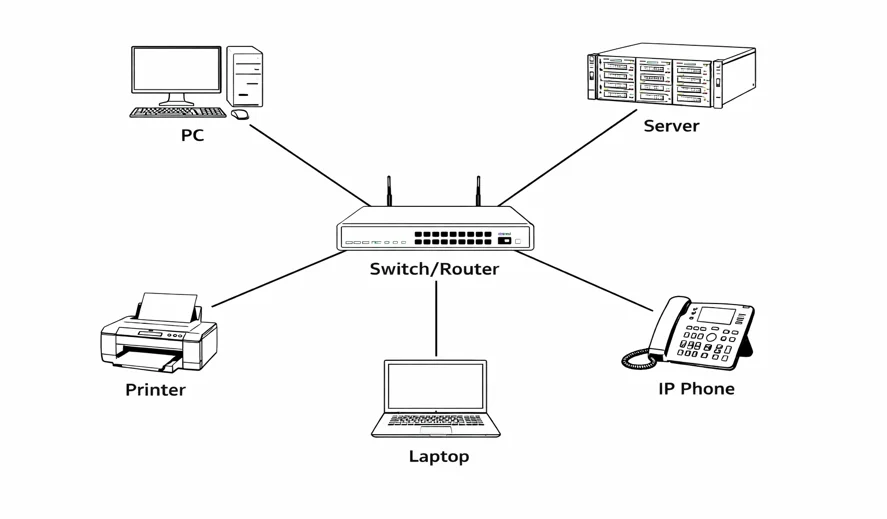
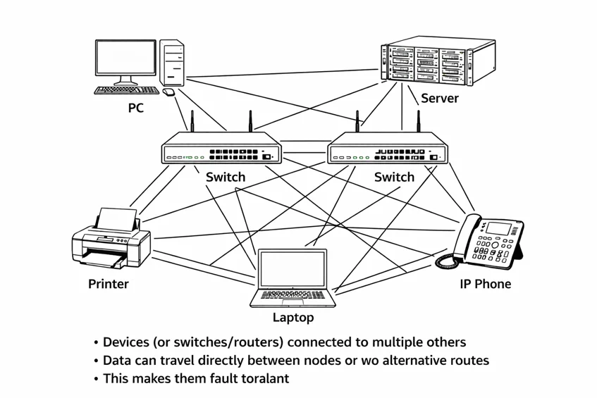
Star: central switch. Mesh: alternative paths. DNS: domain name to IP address.
Mini-whiteboards
Why is a classroom network usually a LAN?
Explain what happens when a star network's central switch fails.
What does DNS return when you look up a domain name?
Pen and A3 mind map
Use key terms, examples and connections.
Match each threat to a proportionate defence
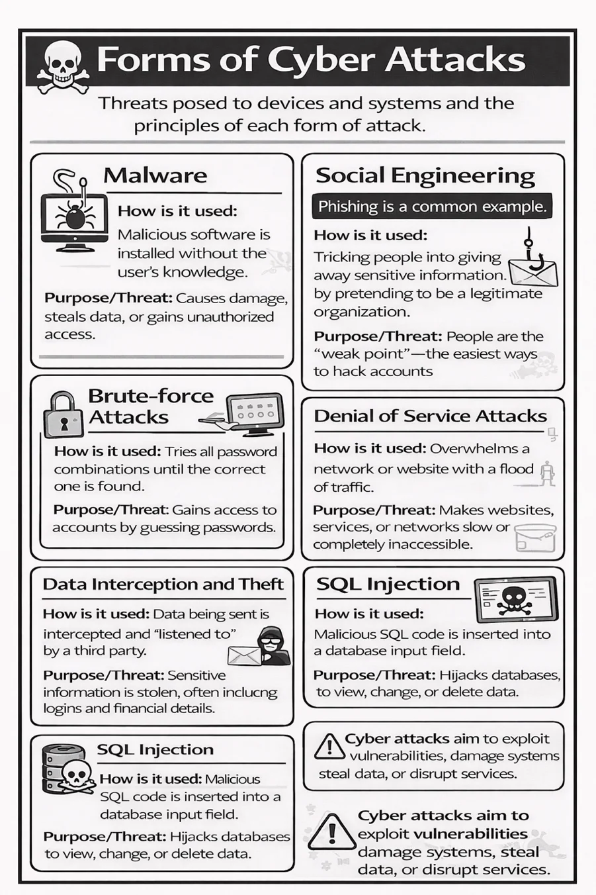
| Threat | Protection |
|---|---|
| Malware | Anti-malware |
| Brute-force | Strong authentication |
| Unwanted traffic | Firewall |
| Stolen files | Encryption |
Mini-whiteboards
How does a firewall help protect a network?
Why is encryption useful when a storage device is stolen?
Pen and A3 mind map
Use key terms, examples and connections.
Operating system functions and utilities
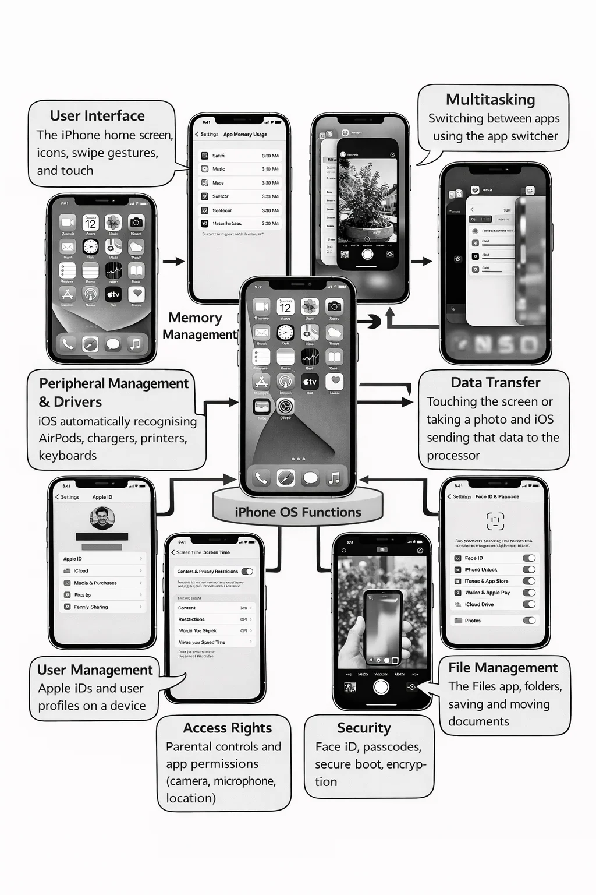
| OS function | Recognisable example |
|---|---|
| Processor management | Scheduling tasks / multitasking |
| Memory management | Allocating RAM |
| File management | Creating and renaming folders |
| User management | Accounts and permissions |
| Peripheral management | Printer drivers and connected devices |
Mini-whiteboards
Which OS function assigns RAM to running applications?
How is backup software different from an encryption utility?
Pen and A3 mind map
Use key terms, examples and connections.
Ethical · Environmental · Legal
| T | Technology: identify the product/decision |
| I | Issue: identify a clear impact |
| E | Effect: explain who is affected and how |
| R | Result: reasoned judgement |
For personal data, link an organisation's action to UK GDPR or the Data Protection Act 2018.
Mini-whiteboards
Give an environmental consequence of replacing phones frequently.
Why should an organisation avoid collecting unnecessary personal information?
Pen and A3 mind map
Use key terms, examples and connections.
Abstraction · Decomposition · Algorithmic thinking

| Technique | Example from your booklet |
|---|---|
| Abstraction | Bus app: keep stops and times, ignore seat colour |
| Decomposition | Game: controls, scoring, collisions and menu |
| Algorithmic thinking | Login: input → check → accept/reject |
Follow variable changes in execution order
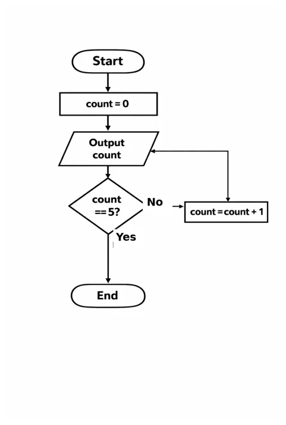
x = 7
while x > 0
print(x)
x = x - 3
endwhileShow the process, not just the final result
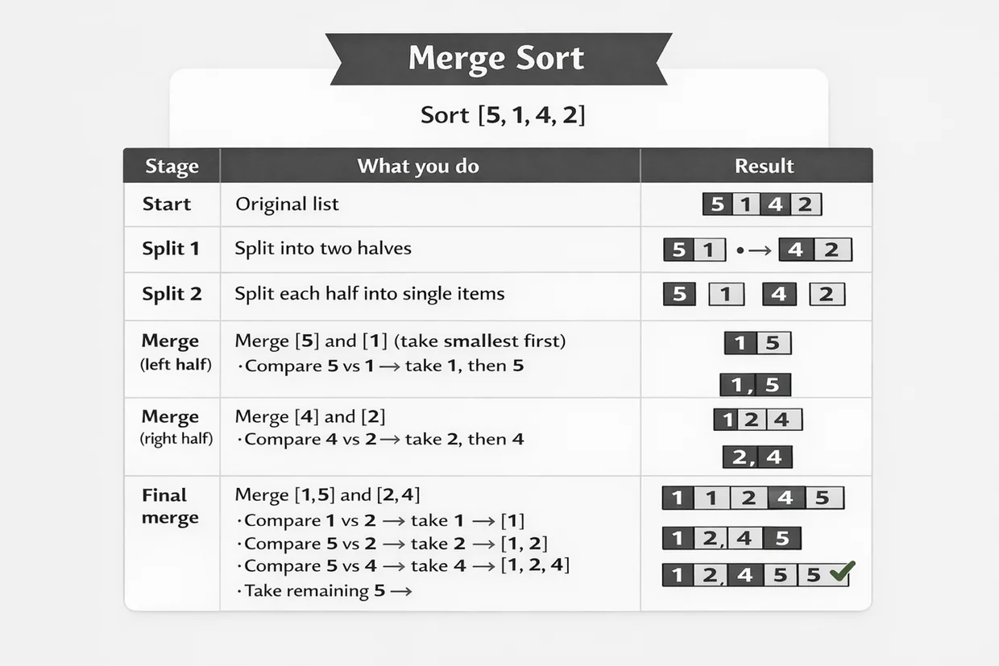
| Stage | Example |
|---|---|
| Start | [6, 2, 8, 1] |
| Split | [6, 2] [8, 1] |
| Single items | [6] [2] [8] [1] |
| Sorted pairs | [2, 6] [1, 8] |
| Final merge | [1, 2, 6, 8] |
Mini-whiteboards
Trace the values printed when x starts at 7 and decreases by 3 until x is no longer positive.
Show how [6, 2, 8, 1] is divided and merged into sorted order.
Explain the precondition for binary search.
Pen and A3 mind map
Use key terms, examples and connections.
Variables · Data types · Conditions
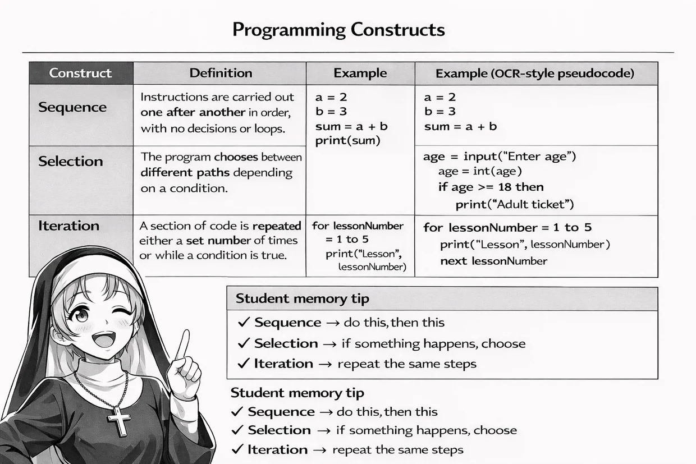
| Construct | Role |
|---|---|
| Sequence | Statements in order |
| Selection | Choose a path |
| Iteration | Repeat statements |
Function · Procedure · Parameter · Argument
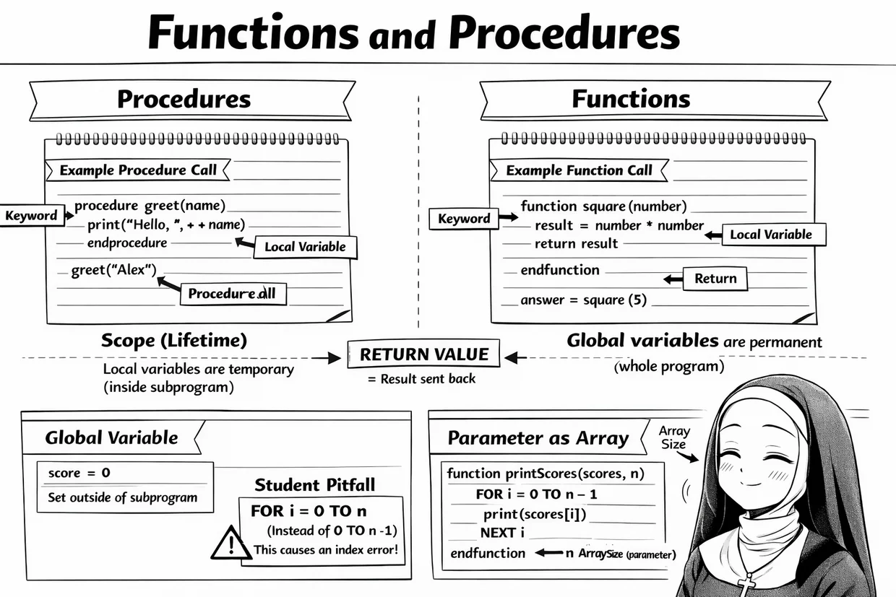
function fee(quantity)
return quantity * 6
endfunction
total = fee(4)Read · Process · Close
f = open("scores.txt")
while NOT f.endOfFile()
line = f.readLine()
if int(line) > 20 then
print(line)
endif
endwhile
f.close()| Operation | Purpose |
|---|---|
| open | Access a file |
| readLine | Read a line |
| endOfFile | Check for end |
| close | Release file |
Mini-whiteboards
What programming construct is an if…else statement?
What is the result of calling the displayed fee function with argument 4?
Why convert a line read from a file before comparing it numerically?
Pen and A3 mind map
Use key terms, examples and connections.
Normal · Boundary · Invalid test data
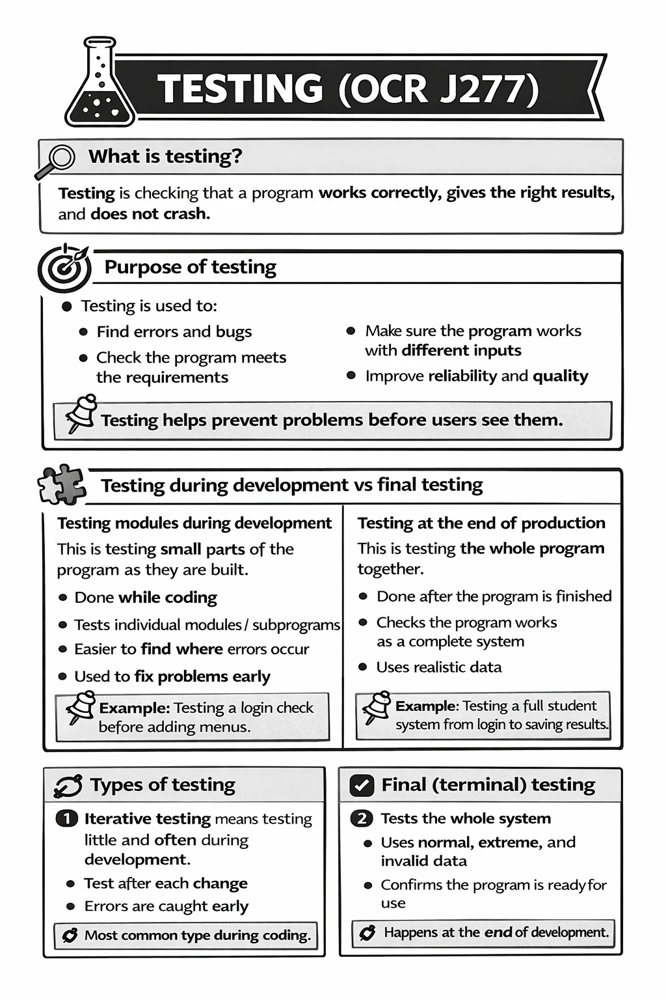
| Input for range 10–50 | Classification |
|---|---|
| 27 | Normal |
| 10 and 50 | Boundary (valid) |
| 51 or −1 | Invalid / erroneous |
| "hello" | Invalid / erroneous type |
Mini-whiteboards
For valid ages 13–18 inclusive, give both valid boundary values.
Why doesn't validation prove that a supplied date of birth is true?
Pen and A3 mind map
Use key terms, examples and connections.
AND · OR · NOT
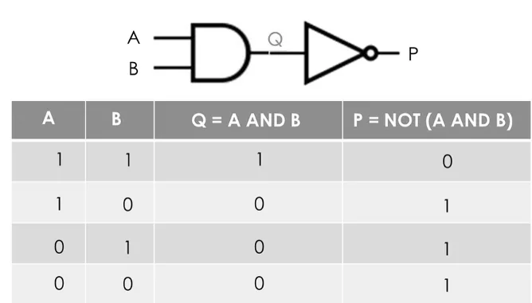
| A | B | A AND B |
|---|---|---|
| False | False | False |
| False | True | False |
| True | False | False |
| True | True | True |
Mini-whiteboards
Evaluate NOT (True AND False).
When is A OR B false?
Write a Boolean condition for a four-character PIN that is not 0000.
Pen and A3 mind map
Use key terms, examples and connections.
Compiler · Interpreter · Development environment
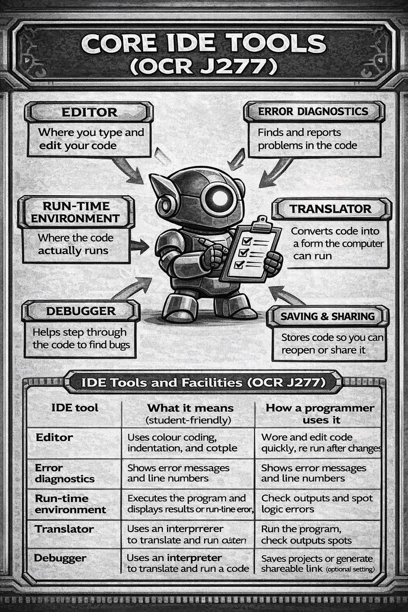
| IDE feature | Purpose |
|---|---|
| Breakpoint | Pause execution |
| Debugger | Inspect variables |
| Syntax highlighting | Recognise code elements |
Mini-whiteboards
What is a breakpoint used for?
Distinguish a compiler from an interpreter.
Pen and A3 mind map
Use key terms, examples and connections.
Binary search works correctly on any unsorted list.
Circle one secure branch and one branch to revisit.